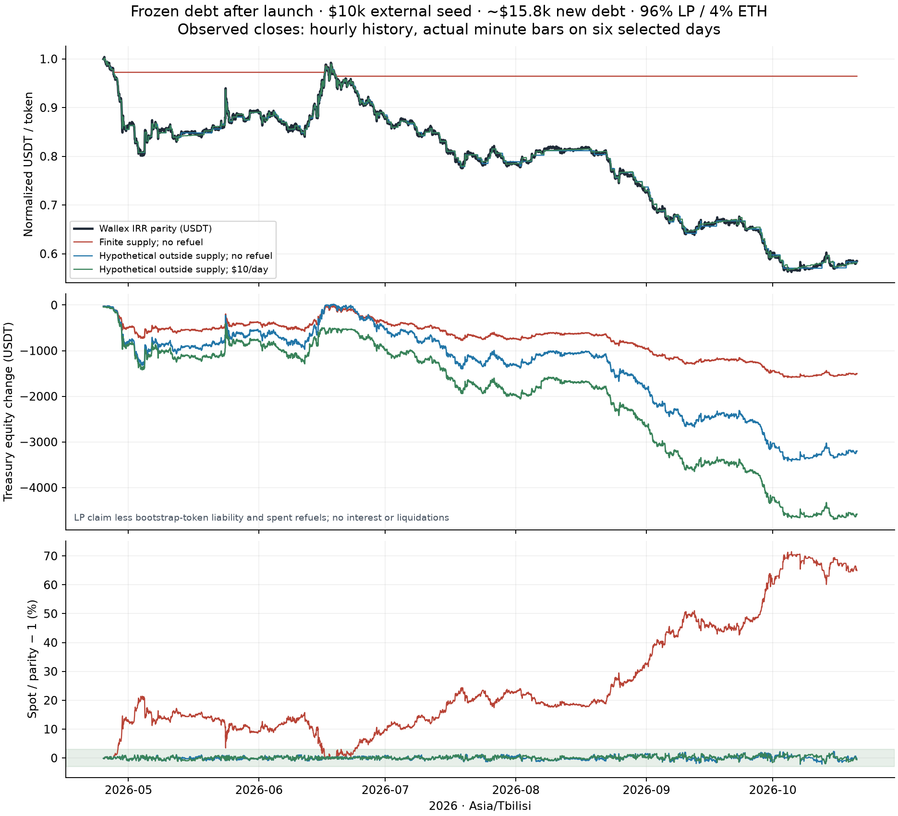
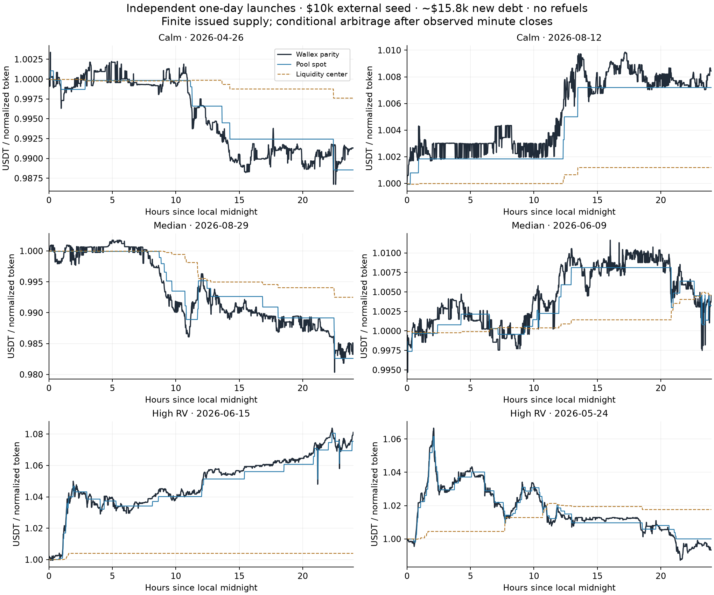

FXSwap issuance, refuel costs and real IRR replay
With the inspected ZCHF/crvUSD FXSwap parameters, the modeled fixed-FX burst-issuance boundary is $31,605 of additional debt per $10,000 of external quote seed. A marginal executable bid floor of 0.97, including swap fees, reduces it to $28,627. These are immediate entry-flow limits, with no arbitrage between loans. They are not sustainable debt limits: both the frozen-debt historical base and the tested bounded above-peg expansion policies fail the 3% peg test.
All dollar figures below are USDT-equivalent, assuming USDT/USD parity. The issued token is normalized to 1 USDT at launch; actual native-IRR quantities scale by the launch IRR/USDT rate. The study uses 96% LP-backed / 4% ETH-backed additional debt, 87.4% LP LTV and an illustrative 67% opening ETH LTV. The bootstrap own-token liability sits outside that 96/4 mix.
Seed and debt accounting
FXSwap needs both assets at launch. External seed E supplies E quote tokens; treasury also issues E own tokens into the pool, so initial LP TVL is 2E, initial token liability is E, and net external seed equity is E. The own-token leg is not new outside capital. The earlier quote-only V3 bootstrap is a different case.
| External quote seed | Initial two-sided LP TVL | Bootstrap token liability | Additional debt: spot floor 0.97 | Additional debt: fee-inclusive bid floor 0.97 |
|---|---|---|---|---|
| $10,000 | $20,000 | $10,000 | $31,605 | $28,627 |
| $20,000 | $40,000 | $20,000 | $63,210 | $57,254 |
| $30,000 | $60,000 | $30,000 | $94,815 | $85,881 |
| $40,000 | $80,000 | $40,000 | $126,420 | $114,508 |
| $50,000 | $100,000 | $50,000 | $158,025 | $143,136 |
If $10k–$50k means total starting LP TVL, external seed is only $5k–$25k and the spot-based additional-debt boundary is $15,803–$79,013. Do not compare either denominator directly with FiRM's residual-debt estimate.
Each borrower buys the entire own-token LP leg, deposits at the resulting reserve ratio, locks the recoverable receipt, mints debt and sells it. Both debt branches sell 100% of minted tokens. Receipt value is measured before that final sale. No 8% fee or withheld debt is assumed. The seed treasury and borrowers own different LP claims.
At the $10k-seed spot boundary, LP borrowers contribute approximately $4,592 of net quote cash in addition to the seed. ETH borrowers post approximately $1,887 of ETH at 67% opening LTV. This is not debt created with seed capital alone. Source fees stay in the pool. Cohorts are $10 per $10k seed in the refined result, all at one timestamp so the EMA cannot learn the issuance pressure between loans. They are numerical integration steps, not a proposed gas-feasible same-block borrowing schedule. Using $100 cohorts changes the boundary by about 0.011%; paced issuance and organic trading are different paths.
The 0.97 number is a fee-exclusive marginal spot floor, not a guaranteed fill price for a large sale. FXSwap is full-range and has no hard 0.97–1.00 boundary. Issuing at the boundary leaves no further spot-discount headroom. Above-peg stabilization issuance is not silently added to the model.
Source and parameters
The engine ports the verified source behind Ethereum pool 0x027B…2ca9, pinned at block 26,241,105. It uses the inspected v2.1.0d StableSwap-based FXSwap invariant, not a generic CryptoSwap approximation. The six pinned onchain quote observations agree within the float-port test tolerances.
| Parameter | Replay setting |
|---|---|
| Raw A | 600,000; internal math convention implies A_true = 30 |
| Swap fee | Dynamic 2.5–25 basis points |
| Fee gamma | 0.003 |
| EMA | Internal exponent time 5,193 seconds, approximately one-hour half-life |
| Adjustment step | 0.0000001 fraction |
| Allowed extra profit | 0.000000000001 fraction |
| Refuel release | Seven days; no preload in these runs |
| Outstanding refuel-share cap | 10% of total shares |
| Deposit protection | 60 seconds, 50% LP-add threshold |
| Refuel asset | External quote only, through actual donation-deposit accounting |
The pool derives its EMA from previous pool trade prices. The Wallex reference is never inserted into its internal oracle. Swaps and refuels may attempt recentering; a call does not guarantee a move. Released refuel shares and permitted profit must cover the recenter cost. Refuel shares have no owner or withdrawal right. Curve mechanism, refuel lifecycle.
This float-unit research port excludes wei rounding, ramps, token transfer behavior, one-coin/fixed-output withdrawals and complete EVM execution. It does not certify this pool or Tomax. Source URLs, hashes, block observations and tests are in the reproducibility download; upstream source text remains available through the verified-source links. These Swiss-franc pool settings have not been optimized or approved for IRR volatility.
What the historical replay assumes
The nominal window is 25 April–20 October 2026, 179 Asia/Tbilisi calendar days. It contains 4,279 / 4,296 hourly bars, with 17 missing bars retained as gaps. Six selected days replace their hourly bars with 8,640 actual one-minute bars, producing 12,775 close observations. No missing ticks are invented. ETH collateral uses the last available Binance ETH/USDT hourly close.
Main historical runs issue half the fixed-FX spot boundary: $15,803 new debt for $10k external seed, or $79,013 for $50k. Debt token quantities stay fixed after launch; they are not re-denominated daily. This is an illustrative headroom case, not a proposed risk limit.
After each observed close, a hypothetical arbitrageur can transact at the reference with a 5 bp external execution cost and requires at least $0.50 profit before fixed execution cost. All circulating own tokens are assumed accessible on that route. Those are optimistic execution assumptions: Wallex trades USDT against fiat Toman; it does not trade or redeem Tomax tokens. Actual Tomax outside liquidity, market depth, settlement, gas and latency are unknown. Minimum-profit sensitivities of $5/$25 and synthetic intrabar path stresses are supplied separately.
Two inventory cases are deliberately separated:
- Finite issued supply: arbitrage cannot sell more own tokens than exist outside the pool. All seed and newly borrowed tokens initially end up inside the pool. Arbitrage buys can create outside holdings, which later sells can exhaust.
- Hypothetical outside-supply benchmark: unrestricted reference-price token sales are allowed for diagnostic comparison. Any pool inventory beyond total issued tokens is explicitly reported. This benchmark is infeasible without an additional collateralized issuance/inventory mechanism, and is not evidence that a launch can maintain the peg.
The replay has no ordinary customer trading, interest revenue, new lending after launch, debt repayment, direct redemption, LP withdrawal, offchain hedge or liquidation execution. Gross swap fees are included in LP inventory returns, not counted again as protocol revenue. Deferred Curve admin claims are not executed; returns are gross of any later claim. Treasury does not automatically own Curve's fee receiver.
Arbitrage sizing searches a dense grid plus geometric small-trade points and refines candidate peaks. Dynamic fees can create multiple profit peaks, so a single concave/unimodal optimizer is insufficient. Independent 192/384/768-grid checks on the two high-volatility minute days changed treasury P&L by less than $0.001 and preserved trade/recenter/breach counts.
Frozen-debt history: circulating supply is the binding problem
With finite supply and no refuels, the largest sampled post-arbitrage spot error is 71.5%, and the liquidity center's error reaches 74.2%. Outside token holdings repeatedly reach zero. Refueling cannot manufacture saleable own tokens or specify their backing.
| Daily refuel budget, $10k seed | Actual 179-day spending | Largest sampled spot error, finite supply | Largest center error | Treasury equity P&L after refuels, excluding gas |
|---|---|---|---|---|
| $0 | $0 | 71.50% | 74.20% | -1,504 |
| $1 | $179 | 68.34% | 70.84% | -1,604 |
| $3 | $537 | 61.03% | 63.10% | -1,788 |
| $10 | $1,790 | 40.60% | 41.71% | -2,624 |
| $30 | $5,370 | 45.20% | 45.93% | -5,862 |
| $100 | $5,496 | 53.89% | 54.68% | -6,108 |
No tested refuel budget meets the full-history 3% spot requirement in the finite-supply base. Higher budgets are not monotonically better: quote-only additions alter inventory, seven-day release limits immediate support, and outstanding refuel shares can hit their cap. Budget is not necessarily money accepted or burned. At $50k seed, the zero-refuel spot error is 70.91%; scaling seed alone does not fix the missing outside route. Tested zero-refuel debt cases of 0%, 25%, 50% and 100% of the launch boundary do not establish a sustainable limit.
In the hypothetical outside-supply benchmark, zero refuels gives a maximum sampled spot error of 2.31%, while the center is as much as 73.63% away. It requires up to 11,478 extra normalized tokens beyond recorded issuance. That gap must be funded and implemented before treating its tracking result as feasible. Good spot tracking and well-centered liquidity are different properties; the former can coexist with very poor depth and expensive execution.

Calm and volatile days: independent fresh launches
Days were chosen using hourly realized log volatility over 158 eligible days, before inspecting strategy P&L: two around the 10th percentile, the middle pair and the two largest. Every selected minute file has 1,440 native bars. Zero-volume minutes remain in the feed; they are not independent trades. Selection and data-quality evidence are included in the download.
The table uses $10k external seed, approximately $15.8k additional debt, finite issued supply, and no refuels. Price errors are measured after the modeled arbitrage at observed closes. Values are USDT; each row starts a new pool at that day's opening reference.
| Local day | Regime | Hourly log RV | Max spot error | Max center error | Seed LP vs holding its starting assets | Treasury equity P&L, excluding gas | LP borrowers' equity P&L |
|---|---|---|---|---|---|---|---|
| 2026-04-26 | calm | 0.70% | 0.43% | 1.10% | +3 | -30 | +30 |
| 2026-08-12 | calm | 0.71% | 0.39% | 0.86% | -64 | -32 | -83 |
| 2026-08-29 | median | 1.31% | 0.41% | 1.24% | +24 | -37 | +72 |
| 2026-06-09 | median | 1.31% | 0.41% | 1.01% | -29 | -12 | -40 |
| 2026-06-15 | high | 4.83% | 0.74% | 7.36% | -710 | -400 | -874 |
| 2026-05-24 | high | 5.86% | 1.30% | 5.82% | -50 | -75 | -22 |
On 15 June, IRR/USDT fell 7.50%, meaning the rial appreciated about 8.11% in USDT. The seed LP gained $411 in marked asset value, but underperformed holding its starting assets by $710. Treasury equity fell $400, because the seed token liability also appreciated. LP borrowers lost $874 of marked equity; their highest individual LP LTV reached 92.79%. These are different views of the same accounting and must not be summed as independent losses.

The $10/day-per-$10k-seed refuel cases and $50k seed cases are in the CSV/JSON. A fresh donation cannot fund a full day's movement immediately: release is spread over seven days and deposits can activate protection. The continuous replay starts April 25 and carries prior donations and pool state forward; April 26 is only its second day, whereas May/June stress dates have more mature state. Its daily P&L is separately downloadable. The two views must not be mixed.
Raising the arbitrage minimum profit from $0.50 to $25 makes the June 15 launch's maximum sampled spot error 3.04%, so even that one-day case fails the tolerance under the less favorable execution threshold. A passing low-cost replay is not robust to congestion.
Above-peg debt expansion: independently funded new loans
This separate sensitivity implements the proposed direction of issuing more debt above peg. After observed-close arbitrage, if spot exceeds 1.025 times external parity, a keeper triggers new 96% LP / 4% ETH loans toward 1.01 times parity. Borrowers buy and lock LP receipts under the same 87.4% pre-sale LTV rule, post ETH at 67% opening LTV, and sell their debt. The keeper uses the external reference for loan valuation and the trigger; it does not overwrite FXSwap's internal EMA.
The model assumes willing, independently funded borrowers are always available up to a daily cap. No such demand or funding commitment has been observed. Caps are normalized own-token principal valued at launch, not fixed daily USDT amounts. Cumulative controller additions are capped at 100 times external seed, excluding launch debt. $500-per-$10k-seed cohorts are numerical flow steps; their count is not a measured gas workload.
| External seed | Daily new-debt cap, launch units | Refuel budget/day | New debt added over history | Net LP quote cash from new borrowers | Gross ETH collateral posted at entry | Largest sampled spot error | Peak gross credit shortfall |
|---|---|---|---|---|---|---|---|
| $10,000 | $5,000 | $0 | $620,000 | $64,904 | $27,506 | 38.41% | $238 |
| $10,000 | $5,000 | $10 | $615,000 | $64,046 | $27,237 | 38.85% | $238 |
| $10,000 | $5,000 | $30 | $600,000 | $61,893 | $26,463 | 39.12% | $238 |
| $10,000 | $20,000 | $0 | $1,000,000 | $110,562 | $46,132 | 35.79% | $592 |
| $10,000 | $20,000 | $10 | $1,000,000 | $110,885 | $46,308 | 36.43% | $592 |
| $10,000 | $20,000 | $30 | $1,000,000 | $110,325 | $46,136 | 36.64% | $592 |
| $50,000 | $100,000 | $50 | $5,000,000 | $549,447 | $229,611 | 35.38% | $2,963 |
The $10k-seed / $20k daily-cap / $10 daily-refuel case reaches $1,015,803 additional debt, including the launch book, and spends $1,790 on refuels. Treasury seed-equity P&L is -4,677, excluding gas and any allocation of borrower credit losses. Its worst ETH cohort reaches 114.56% LTV; peak gross ETH shortfall is $592. Healthy newer ETH loans do not offset underwater older loans in this gross-shortfall metric.
None of these bounded expansion scenarios passes 3%. The faster cases exhaust their 100-times-seed cumulative debt-addition cap. This does not rule out another controller, larger funding, different parameters, a funded inventory withdrawal/redemption rule or a matching-currency quote. It shows the cost and failure boundary of the specified policies. A successful policy must also pass during pauses, thin demand and stale reports.
New LP receipt LTV is 87.4% before debt sale; sales can immediately change collateral value, particularly when the pool trades above external parity. The production design needs a post-action health requirement. lp_borrower_equity_pnl in the growth output measures changes after each entry's marked equity contribution; it is not cash-based return on investment. Net LP cash is signed and can be negative for individual premium-capture loans. ETH collateral posted is gross and does not subtract debt-sale proceeds.
This sensitivity still does not execute liquidations, the proposed pending-liquidation sponsorship queue, repayments or hedges. Gross shortfalls are exposures requiring funded resolution, not realized losses. A peak shortfall must not be added to final treasury P&L from another timestamp. A treasury-run controller would also need its own loan-call gas and collateral budget; the external-borrower assumption does not provide those for free.
Loss definitions and ETH exposure
- LP asset P&L: final recoverable quote plus own tokens marked at external parity, minus the post-issuance starting LP claim. Its starting inventory includes issuance-related fees. A separate launch-to-final value is saved.
- LP versus HODL: compare that final claim with holding the same post-issuance quantities outside the AMM. It includes fees, adverse selection and any refuel subsidy; it is not isolated textbook impermanent loss.
- Treasury equity: treasury seed LP claim minus bootstrap-token liability minus all accepted refuel principal. The P&L starts immediately after issuance. Gas, overhead, interest and hedge income are excluded.
- Borrower equity: recoverable collateral less debt at the external reference, with P&L starting after entry; LP and ETH cohorts are marked individually. ETH collateral uses its independent history.
- Gross credit shortfall: positive debt value minus collateral value. It is a marked exposure before settlement costs, not a realized liquidation loss. No liquidation threshold, execution delay or funded loss waterfall is adopted in this replay.
For the continuous $10k-seed/no-refuel base, seed LP asset P&L is -5,656, LP versus HODL is +84, and treasury equity P&L is -1,504. Maximum marked LP LTV is 87.70% and maximum ETH LTV is 92.29%. The maximum gross collateral shortfall is $0. This can coexist with a failed peg; solvency and exchange-price tracking are different tests.
At 60% opening ETH LTV, the hourly sensitivity reaches 82.65% ETH LTV and $0 maximum gross ETH shortfall. At 75% opening ETH LTV, the hourly sensitivity reaches 103.31% ETH LTV and $18 maximum gross ETH shortfall. Hourly ETH marks cannot establish intrahour liquidation safety. These scenarios do not include the cost of closing or hedging a position.
Daily refueling and ETH budget
There is no demonstrated minimum refuel spend that makes this base design meet 3% throughout the history. Tested $0–$100/day per $10k seed are scenarios, not operating recommendations. Refuels are an unrecoverable token expense, while gas pays for the deposit transaction. Shares burned measure buffer consumption and are not another invoice. Unburned donations are still not treasury-withdrawable assets.
Assume one accepted quote-only refuel per day at 250,000 gas, with token approvals already in place. This gas amount is an unmeasured planning input. FXSwap does not require a separate V3 range-reset transaction; eligible swaps/deposits perform recentering internally, with extra gas that must be measured. Ordinary user/arb gas is paid by those callers unless treasury explicitly sponsors them.
| Effective gas price | One currency, ETH/day | Three currencies, ETH/day |
|---|---|---|
| 1 gwei | 0.00025 | 0.00075 |
| 5 gwei | 0.00125 | 0.00375 |
| 20 gwei | 0.00500 | 0.01500 |
For illustration only, at ETH = $2,000 and 5 gwei, a $10 token refuel costs 0.005 ETH equivalent plus 0.00125 ETH gas = 0.00625 ETH/day per market. A $50 token refuel is 0.02625 ETH/day including that gas. Across three markets those examples are 0.01875 and 0.07875 ETH/day. They do not meet a demonstrated peg guarantee and do not include collateral capital, liquidations, oracle reports, custody, bridges, infrastructure or security. Actual token spending converted at contemporaneous historical ETH prices is saved separately as refuel_eth_equivalent; it excludes gas.
| Finite-supply historical case | Token spending over 179 days | Mean token funding in ETH/day at historical ETH marks | Mean total ETH/day adding assumed 5-gwei refuel gas |
|---|---|---|---|
| $10,000 seed, $0/day budget | $0 | 0.000000 | 0.000000 |
| $10,000 seed, $1/day budget | $179 | 0.000481 | 0.001731 |
| $10,000 seed, $10/day budget | $1,790 | 0.004805 | 0.006055 |
| $10,000 seed, $30/day budget | $5,370 | 0.014416 | 0.015666 |
| $50,000 seed, $50/day budget | $8,950 | 0.024026 | 0.025276 |
This combines historical ETH conversion with a hypothetical constant gas price; it is not a reconstruction of actual transaction fees. Zero refuels means zero refuel-call gas in this table. Download the gas assumptions and calculations.
The same fixed-FX capacity multiples can be applied to normalized TRY/ARS pools with identical parameters. IRR history does not estimate TRY/ARS refuel demand or losses. Their feeds, counterparties and economic paths require separate replays. Pairing matching local-currency savings shares changes the reference from FX drift to a savings ratio and partner-peg risk; it is not tested by this USDT-quote replay.
Design implications
FXSwap removes the need to manage V3 ticks, but not the need for external price discovery, executable token supply, funded stabilization and conservative lending valuation. Before a pilot, specify an accountable mechanism for above-peg issuance or inventory conversion, real exit access and backing, then replay it without violating the 96/4 debt policy. Consider the matching-currency partner route separately. Optimize concentration/EMA/fees and refuel scheduling against adverse paths; copying ZCHF settings does not prove suitability for IRR.
Sampling limits remain material: closes omit path order and intrabar fills, missing bars mask events, zero-volume bars may be stale, and a single exchange is not the proposed composite oracle. OHLC/OLHC stress outputs assign synthetic path order and times; they are sensitivity scenarios with hindsight path construction, not observed ticks or deployable strategy evidence. Even a passing sampled error cannot prove continuous 3% compliance. No automatic currency peg follows from the pool's oracleless swap implementation. The RFP and security criteria require these gaps to be resolved.
Downloads and reproduction
- Complete assumptions and results
- Static capacity details
- All run summaries
- Continuous and cold daily P&L
- Selected cold-day results
- Historical chart, PDF
- Selected-day charts, PDF
- Above-peg expansion assumptions and results
- Above-peg expansion summary CSV
- Source observations, archived inputs, model, tests and runners
python3 -m unittest discover -s tests -v
python3 tools/run_fxswap_experiments.py
python3 tools/run_fxswap_controller.py
python3 tools/write_fxswap_report.py
Replay uses Python 3.11+ and its standard library. Plotting additionally needs Matplotlib: python3 tools/plot_fxswap_results.py. Raw and normalized input SHA-256 hashes, exact request URLs and coverage are archived. Public exchange history can be revised; replay the included archive for this result. Wallex API reference, Binance kline definitions, verified source retrieval.